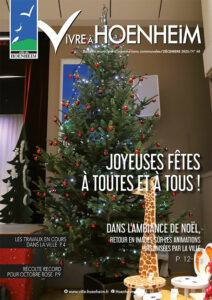
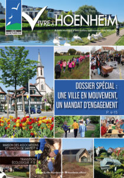
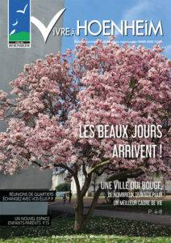

Le mag
Vivre à Hoenheim N°69
Le magazine Vivre à Hoenheim n°69 de mai 2026, vient de paraître. Dans cette édition découvrez entre autre la nouvelle équipe municipale, la première Journée du sport pour les écoliers, les prochaines réunions de quartiers, les travaux en cours, les 120 ans de la Société de musique municipale, le projet de portes de l’EHPAD, les […]
Vivre à Hoenheim N°68

Le magazine Vivre à Hoenheim n°68 de décembre 2025, vient de paraître. Dans cette édition découvrez entre autre un hommage à Chantal TRENEY, les travaux en cours dans la ville, les initiatives des écoles de la ville, la nouvelle pasteure, un article sur les danger du monoxyde de carbone, une mobilisation exceptionnelle à Hoenheim pour […]
Vivre à Hoenheim N°67

Le magazine Vivre à Hoenheim n°67 de septembre 2025, vient de paraître. Dans cette édition découvrez entre autre un hommage à Grégory Zebina, la cérémonie des sportifs méritants, l’ouverture du terrain d’aventures et de la plaine sportive, la tournée de rentrée, les travaux en cours dans la ville, deux portraits de Hoenheimois, la sortie annuelle […]
Vivre à Hoenheim N°66

Le magazine Vivre à Hoenheim n°66 de juin 2025, vient de paraître. Dans cette édition découvrez entre un dossier spécial : une ville en mouvement, un mandat d’engagement, Hoenheim championne du tri des biodéchets, l’agenda des prochains évènements, un retour en images sur les événements marquants, les grands anniversaires, le registre canicule… Bonne lecture !
Vivre à Hoenheim N° 65

Le magazine Vivre à Hoenheim n°65 de mars 2025, vient de paraître. Dans cette édition découvrez entre autre les travaux en cours dans la ville, les dates des prochaines réunions de quartier, du nouveau pour la prise de rendez-vous des titres d’identité, les médaillés du travail et retraités de la commune, un nouvel espace d’accueil […]